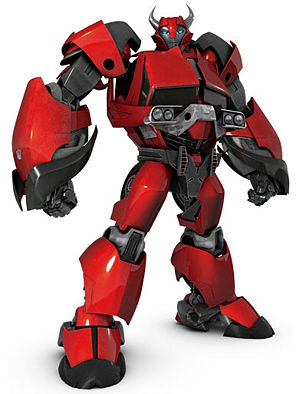

Entry 1.
My name is Sapphire Nakoma, and I thought that recording things I do would be a good idea, that way when I get back home I can look back and figure out what happened and share with the others. I think that recording things in this digital journal will just help.
Entry 2.
Me and Si eended up here, im not sure what year it is or what universe we're in, just that we're in a forest alone. Thankfully we have eachother in this new place.
Entry 3.
We kept going though this place, and we found out where we were, It’s 2019 now, and the timeline is different from my own. We ended up going back through time and universes And Si dosent know how to get back. It looks like we’re stuck here for the time being. Though on a good note we met someone named Travis who seems nice.
Entry 4.
We ended up running into Intel! He’s younger now, but the one correct to this time. It was great to see a familiar face around here. I haven't seen Travis again though, but I’m hoping me and Si can figure out how to get home… I miss Kai and my parents.. I hope they arent worried about us, I'm going to see if Intel can help contact them for us.
Entry 5.
I lost Silas, we got sepertated and I need to go find him as soon as I can.
Entry 6.
I ran into someone named Deadpool, I tried to stop him from killing people but I couldn't stop him for long, after restraining him he broke free, and i was thrown out the window of a building then thrown around some more. I ended up breaking my arm, but someone named Zen came and helped. I ran into two others there, Solstice and Dante. Solstice was confused and used what I think were speakers to broadcast his voice before I left. I went to the field and met Kat, who got her friend Tiegan to help heal me. I'm thankful to them.

 >
> 
Entry 7.
I was in the forest earlier, and I ran into this robot, he said his name was Cliffjumper. He could transform into this car, and he ended up putting me in his chest (he turned into a car and his chest wasth front seat when he was a big robot, And took me with him. We went and found decepticons, and he fought them with me there. He threw what I think was a grenade and transformed and drove out. I hit my head rather hard on the side of the cabin, but I think im ok. It’s just hard to focus. Good thing is that it seems we have similar taste in music. Most of what he plays on the radio are songs on my playlist, and said I remind him of his old partner Arcee, though she waskilled on one of his missions.
